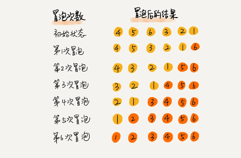

数据结构算法拾遗
1 链表

1.1 LRU缓存
- 配合哈希表实现
1.2 带头链表
- 利用哨兵节点(无数据的头节点)
1.3 边界条件检查
- 如果链表为空时，代码是否能正常工作？
- 如果链表只包含一个结点时，代码是否能正常工作？
- 如果链表只包含两个结点时，代码是否能正常工作？
- 代码逻辑在处理头结点和尾结点的时候，是否能正常工作？
2 排序算法
2.1 评价标准
- 执行效率
- 最好情况、最坏情况、平均情况时间复杂度
- 时间复杂度的系数、常数、低阶（数据规模不大时）
- 比较次数和交换（或移动）次数
- 内存消耗
- 原地排序算法 O(1)
- or 需要占用额外空间
- 稳定性
2.2 冒泡排序

- 冒泡排序包含两个操作原子： 比较 和 交换
- 优化：当某次冒泡操作已经没有数据交换时，说明已经达到完全有序，不用再继续执行后续的冒泡操作。
- 最好时间复杂度：O(n) 数据已保持有序时
平均复杂度：n个元素有n!种排列方式 概率推导很复杂。引入 有序度 概念
- 有序度 是数组中具有有序关系的元素对的个数
[1, 4, 3, 2, 5] (1,4) (1,3) (1,2) (1,5) (4,5) (3,5) (2,5) 有序度为7
- 满有序度 \(\frac{n(n-1)}{2}\) 5个元素为10
2.3 插入排序
- 插入排序包含两个操作： 比较 和 移动
- 移动操作的次数总是固定的，就等于逆序度。
- 逆序度 = 满有序度 - 有序度
- 平均复杂度 = 元素数 * 插入数组操作的平均复杂度(O(n)) = \(O(n^2)\)
2.4 选择排序
- 类似插入排序。选择排序每次会从未排序区间中找到最小的元素，将其放到已排序区间的末尾。
- 最好、最坏、平均复杂度均为 \(O(n^2)\)
- 非稳定的排序算法